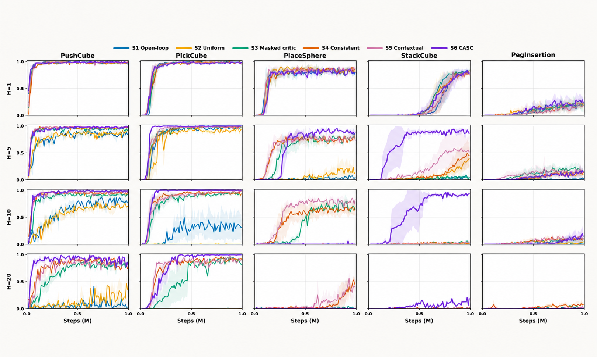
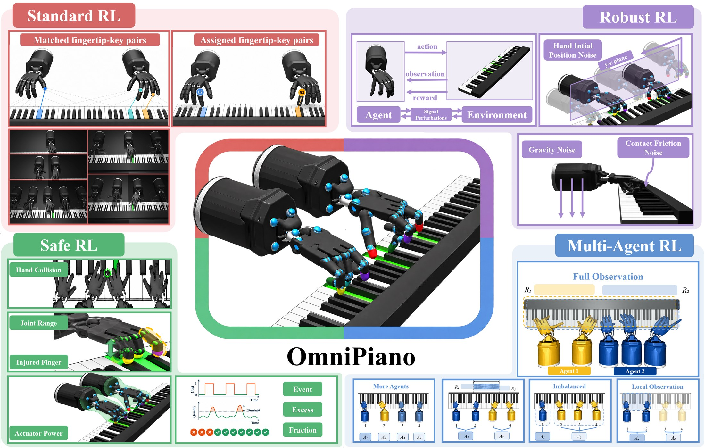
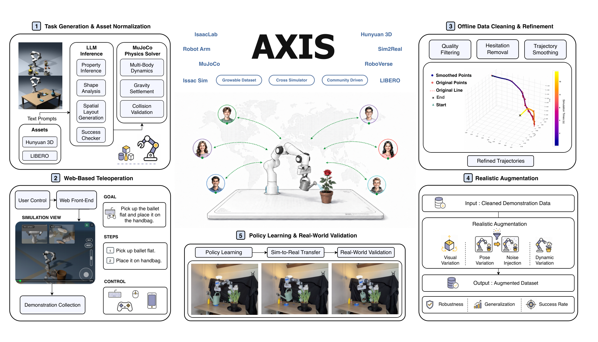
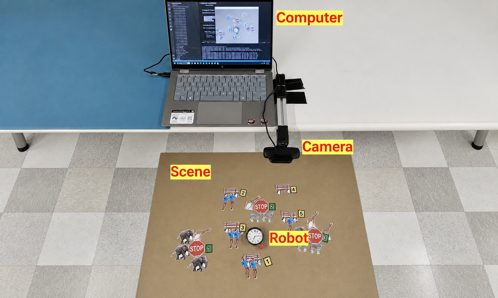
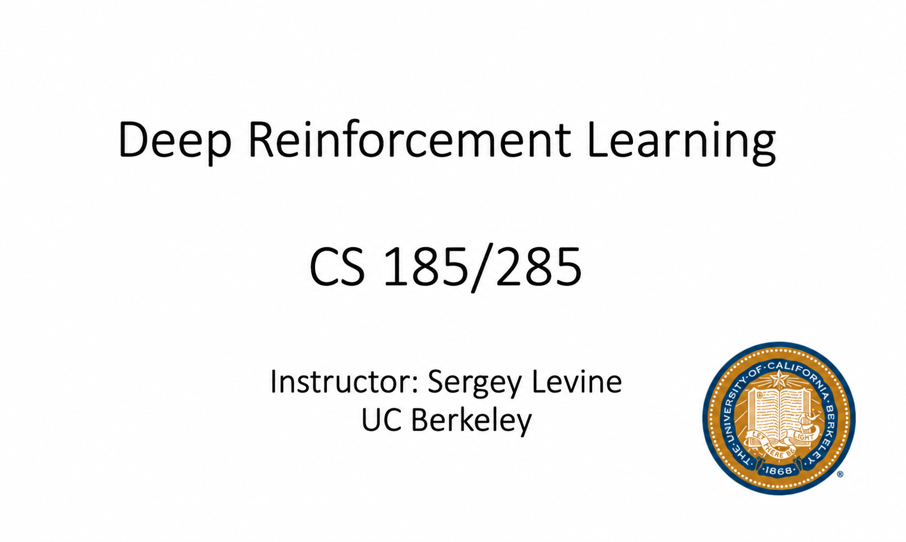
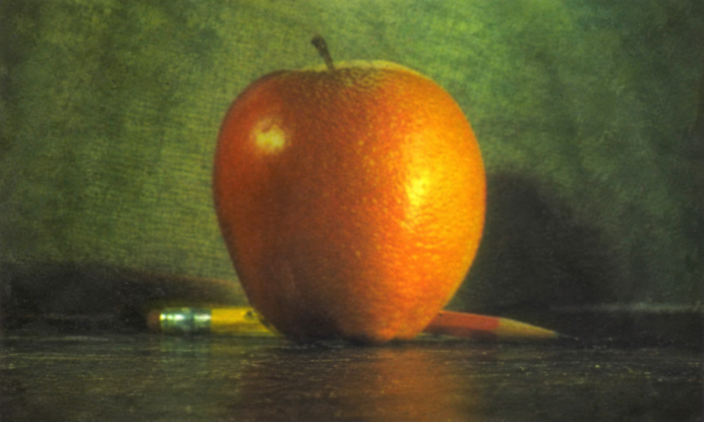

Evolution of Learning Based Humanoid Whole-body Control
A self-made survey summarizing 101 related works.
Undergraduate Student in Computer Engineering · CUHK-Shenzhen
I’m Yifan Xu, and I also go by Ivan. I love robotics, especially exploring how robots can learn from experience, understand the physical world, and make reliable long-horizon decisions.
01
I am broadly interested in robot learning, with a focus on reinforcement learning and robot foundation models (WAM, VLA, BFM) for generalizable and long-horizon robot decision-making and control.
My goal is to develop robots that can persistently learn from experience, understand the physical world, and make reliable long-horizon decisions. Although recent multimodal foundation models have shown striking capabilities in multimodal reasoning for robot control, I believe there is still a long way to go before this goal can be achieved.
Ideal Case: a predictive brain proposes and evaluates action intent; a robust cerebellum grounds it into plausible physical behavior; an efficient learning mechanism continuously adapts both to new environments.
02
A self-made survey summarizing 101 related works.
03

* Equal contribution
Proposed an action-chunking RL algorithm that uses a single-action critic instead of a chunked critic. The algorithm also adapts the executed chunk size based on task stages, and introduces a unified consistent framework for execution, critic bootstrapping, and actor updates.

* Equal contribution · † Project Lead · ✉ Corresponding author
Led the design and development of OmniPiano’s multi-agent reinforcement learning benchmark component.

Worked on π0 fine-tuning and deployment on a Franka robotic arm.

Co-developed a model-free frequency-domain evaluation framework for QP-based controllers using Welch's power spectral density (PSD) estimation and statistical analysis. Evaluated fixed and dynamic null-space strategies, revealing trade-offs between low-frequency tracking accuracy and high-frequency jitter.
04

Final project for UC Berkeley EECS 149/249: Embedded Systems. Created a spatial-reasoning VQA dataset and fine-tuned vision-language models for closed-loop robot navigation, improving the overall success rate on spatial-reasoning tasks from 2.5% to 90.2%.

A collection of assignments and a final project in deep reinforcement learning. The final project investigates reward calibration for reward-model ensembles in LLM-RL, improving GRPO performance by 15% on related tasks.

Course portfolio for UC Berkeley CS 180/280A: Computer Vision and Computational Photography. Includes six projects spanning diffusion and flow-matching models, neural radiance fields, camera geometry and perspective, image mosaics, frequency-domain image processing, and image alignment.
05
06
Current
Existential Robotics Laboratory, University of California, San Diego
Junior Year
Summer 2024
Sept. 2023 – Present
Before University